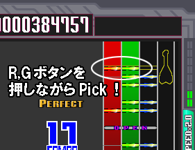
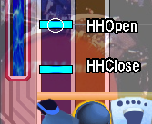
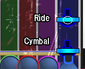
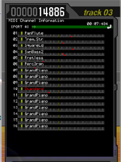

演奏画面
| 演奏画面の操作 |
演奏画面
演奏方法
- 各レーンのチップオブジェクトが、画面下の緑色のバーと重なった瞬間を狙って、該当するパッドを叩いて下さい。（ギター／ベースの場合は、該当する色のボタンを押しながらピックを弾いて下さい。）
 ドラム側 ギター側
叩いたタイミングによって、５段階の判定（Perfect, Great, Good, Poor, Miss）が表示されます。
初期状態でのキーとパッドの割り当てについては、「デフォルトのキー割り当て」をご参照ください。
- 「○」のついはハイハットはハイハットオープン、「○」のついたシンバルはライドシンバルです。
 
ハイハットオープンやライドは、ハイハットクローズやシンバルで叩いたとしても Miss にはなりません。
ただし、「９レーン演奏」を有効にしている場合は、ハイハットオープンのチップのときにハイハットクローズで叩くと、ハイハットクローズに割り当てられている音色で演奏されます。シンバルとライドについても同様です。（「９レーン演奏」が無効であるとき、または９レーンモードでない曲データの場合には、どちらのパッドでどちらのチップを叩いても、正しい音色で演奏されます。）
９レーン演奏の有効・無効については、コンフィグ画面で設定できます。
- 演奏中に、矢印キーの上下（「↑」「↓」）で、ドラム譜面のスクロール速度をリアルタイムに変更することが出来ます。
- MID形式ファイルを演奏中の場合は、以下のキー操作が有効になります。
PageUp DrumMIDI関連情報ページの表示 PageDown DrumMIDI関連情報ページの表示
→
→ 
DrumMIDI関連情報ページ
また、DrumMIDI関連情報ページが表示されている間は、以下のキー操作が有効になります。
PageUp DrumMIDI関連情報ページの切り替え（順方向） PageDown DrumMIDI関連情報ページの切り替え（逆方向） ↑↓←→ DrumMIDIカーソル移動 Enter DrumMIDI値の変更・決定 End DrumMIDI関連情報ページの表示OFF
- 曲が最後まで演奏されると、自動的に終了して結果表示画面へと移ります。
また、演奏中にESCキーまたはギター・ベースの Cancel キーを押下すると、演奏をそこで中断して選曲画面に戻ります。